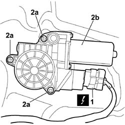

7005M28 FRONT SIDE DOOR ELECTRICALLY OPERATED WINDOW MOTOR - R.R. WITH DOOR PANEL/SUPPORT FRAME REMOVED
- Path
- Procedures > 70 FITTINGS > 7005 PASSENGER COMPARTMENT FRONT SIDE DOORS > 7005M FRONT ELECTRIC WINDOWS > 7005M28 FRONT SIDE DOOR ELECTRICALLY OPERATED WINDOW MOTOR - R.R. WITH DOOR PANEL/SUPPORT FRAME REMOVED
- Kind
- repair procedure (removal / refitting; the operation number is the code)
- Applies to
- all engines; all production periods
- Interactive page
- https://sloeber94.github.io/elrnDB-fCrm/en/#/194000877
Applies to: all engines; all production periods
 Removing
Removing
 Refitting
Refitting1. Disconnect the electrical connection.
Description | Connector | |
|---|---|---|
1 | LEFT FRONT ELECTRIC WINDOW MOTOR |
Description | Connector | |
|---|---|---|
1 | RIGHT FRONT ELECTRIC WINDOW MOTOR |
2. Undo the retaining bolts (2a) and remove windscreen wiper motor (2b).

Applies to: all engines; all production periods
Refitting
Removing- Check that the motor is not damaged.
- Position the motor and tighten the fixing bolts.
- Connect the electrical connection.
Description | Connector | |
|---|---|---|
LEFT FRONT ELECTRIC WINDOW MOTOR |
Description | Connector | |
|---|---|---|
RIGHT FRONT ELECTRIC WINDOW MOTOR |